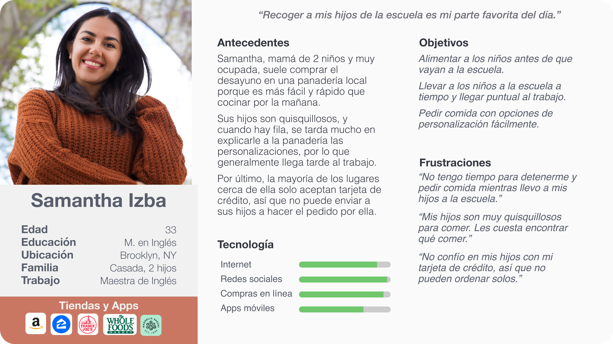
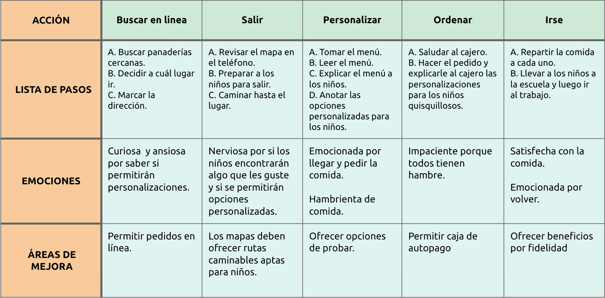
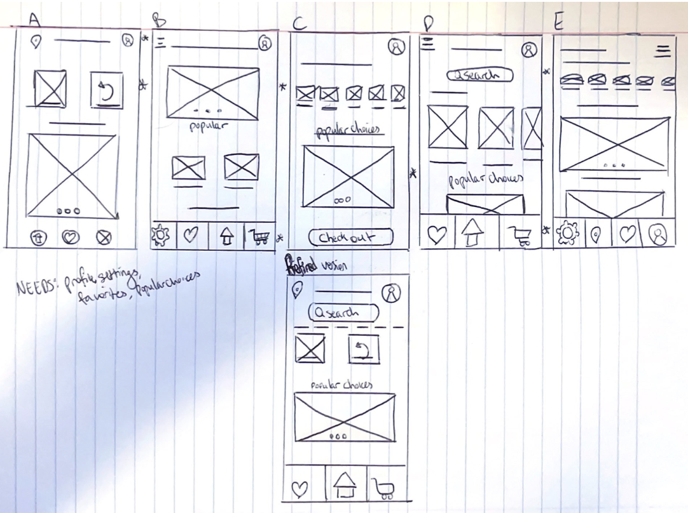

Baked in Brooklyn
Concepto para una app de panadería local para modernizar las experiencias de pedido.
Problema: Baked in Brooklyn es una panadería local y popular que ofrece desayunos y almuerzos a precios accesibles. Durante las horas punta, las largas filas y los clientes apresurados dificultan la personalización de los pedidos. El personal suele sentirse abrumado al explicar los productos del menú, y los clientes no tienen tiempo para esperar o hacer preguntas. Los clientes solo quieren hacer su pedido con anticipación y recoger su comida rápidamente.
Solución: Una aplicación móvil que permita a los clientes explorar el menú, personalizar sus pedidos fácilmente y hacer pedidos por adelantado, reduciendo así los tiempos de espera en la tienda, aliviando la carga del personal y mejorando la experiencia general tanto para los trabajadores como para locales y turistas.
Herramientas Figma, Canva, Adobe
Plazo 6 semanas
Rol Investigación, Branding, Diseño UX/UI, Prototipado, Pruebas de usabilidad

Empatizar
Entender el problema y el usuario
Antes de realizar la investigación
Asumí que los clientes típicos de la panadería eran adultos ocupados que valoraban comida de alta calidad y a buen precio, que no podían preparar fácilmente en casa, y que a menudo compraban desayuno o almuerzo para llevar.
A través de entrevistas con usuarios y observación
Descubrí que la mayoría de los clientes eran profesionales con rutinas exigentes que no tenían tiempo para esperar en largas filas ni para personalizar sus pedidos en el momento. Muchos expresaron frustración durante las horas punta y deseaban una forma más rápida y conveniente de hacer sus pedidos habituales.
Al hablar con el personal
Pude ver lo abrumador que puede ser el rush matutino. A menudo tenían que explicar los productos del menú y gestionar pedidos personalizados bajo presión, lo que ralentizaba el servicio y aumentaba el estrés. Estas observaciones revelaron un punto de dolor común: la necesidad de un sistema que reduzca los tiempos de espera y facilite las mañanas para todos.
Testimonios de usuarios
“Me encanta su tostada de aguacate, pero odio esperar en la fila todas las mañanas.”
— Cliente, 34 años
“Siempre estamos a tope durante las horas punta y no podemos personalizar cada sándwich.”
— Empleada, 26
Puntos de dolor
Puntualidad: Los clientes necesitan sus pedidos rápido para llegar a tiempo al trabajo o a la escuela.
Personalización: Muchos quieren elegir exactamente qué comer mediante opciones personalizadas en el menú.
Rapidez: Las personas ocupadas no tienen tiempo para esperar a que preparen su comida.
Definir
Enmarcar el problema
A través de investigaciones y entrevistas, descubrí que las visitas a la panadería en horas pico abruman tanto a clientes como a empleados, especialmente cuando los pedidos requieren personalización. Necesitan una forma más rápida y conveniente de hacer pedidos habituales sin el estrés de las largas filas o las explicaciones repetidas.
Desarrollo de la persona
Samantha, una ocupada madre de dos hijos en Brooklyn, inspiró a la persona. Combina las entregas escolares con el trabajo cada mañana y valora la rapidez, la flexibilidad y la posibilidad de ordenar con anticipación sin complicaciones adicionales.

Mapeando el recorrido del usuario
La mañana típica de Samantha comienza preparando a sus hijos y saliendo de casa antes de las 8:30 a.m. Necesita conseguir el desayuno para la familia, pero no tiene tiempo para esperar en la larga fila matutina de Baked in Brooklyn. La experiencia actual en la tienda genera estrés: esperas prolongadas, dificultad para personalizar pedidos para comensales exigentes y la presión de retrasar a otros clientes mientras toma decisiones en el momento.
Con una app móvil, Samantha podría explorar el menú la noche anterior, personalizar los pedidos de cada miembro de la familia y programar la recogida justo a la hora que necesita. Esto transforma su mañana de estresante a fluida, permitiéndole enfocarse en lo que más importa: preparar a su familia y mantener un inicio positivo del día.

Idear
Wireframe en papel
Comencé con la página principal porque marca el tono de la experiencia. Exploré diferentes versiones de la pantalla de inicio, experimentando con el diseño, la jerarquía y el contenido. Marqué con estrella mis elementos, estructura, flujo o claridad favoritos, y luego combiné todo en un wireframe final que equilibra funcionalidad con un diseño intuitivo y acogedor.

Wireframe Digital
Después de hacer un wireframe en papel con el que estuve satisfecho, comencé la versión digital. Esto me permitió mejorar la organización, el espacio y el flujo, acercando el diseño a cómo se vería en pantalla.

Prototipar
Prototipo de baja fidelidad
Después de finalizar los wireframes, comencé a enlazar todo en Figma para mapear el flujo principal del usuario. Me enfoqué en el proceso de compra: cómo alguien añadiría algo al carrito y completaría un pedido. Fue una manera simple de probar cómo funcionaban las pantallas juntas y si el flujo tenía sentido antes de avanzar con los detalles visuales. Mientras construía el prototipo de baja fidelidad, me aseguré de mantener el diseño sencillo y la navegación clara, garantizando que todas las pantallas clave estuvieran conectadas de forma lógica. Como el diseño todavía era básico, me concentré en la estructura y el flujo del usuario más que en los aspectos visuales o el contenido detallado, lo que ayudó a priorizar la funcionalidad.


Prototipo de Alta fidelidad
Al crear el prototipo de alta fidelidad, aproveché todo lo aprendido con la versión de baja fidelidad y la retroalimentación de usabilidad que generó. Revisé cada pantalla con ojos frescos, realizando cambios en el flujo, los aspectos visuales y los textos breves. Incorporé imágenes reales, colores y elementos de marca, y añadí más jerarquía visual a los elementos clave. El prototipo de alta fidelidad se convirtió en una versión más realista del producto final, permitiéndome probar no solo la funcionalidad, sino también cómo se sentía el diseño en un contexto real.

Evaluar
Mejoras basadas en comentarios de los usuarios
Interfaz de personalización simplificada
Al pasar del wireframe al prototipo, cambié la interfaz de personalización de mostrar todas las opciones como botones a usar un menú desplegable. Este cambio eliminó el desorden visual y evitó que la interfaz resultara abrumadora para los usuarios que no querían personalizar sus pedidos, pero mantuvo la personalización fácilmente accesible para quienes sí la deseaban.
Navegación inferior persistente
Basándome en comentarios de estudios de usabilidad, rediseñé la navegación inferior para que permanezca “fija” en la parte inferior de la pantalla en todo momento. Así, los usuarios ya no necesitan desplazarse hasta el final de la página para encontrar el menú de tres íconos, haciendo la navegación más intuitiva y accesible durante toda su experiencia con la app.

Conclusión
Reflexiones finales
Al repasar todo el proceso, desde investigar las necesidades de los usuarios, hasta el boceto, prototipado, pruebas y ajustes, aprendí mucho sobre lo que realmente hace que un diseño funcione. Me demostró lo importante que es iterar continuamente y prestar atención a los pequeños detalles que pueden hacer que la experiencia sea más fluida y agradable para los usuarios.
Consideraciones de accesibilidad
Iconografía intuitiva: Utilicé iconos fáciles de entender y familiares para que los usuarios no se confundan durante el proceso de pedido.
Apoyo visual: Añadí imágenes para un efecto visual. Los usuarios con dificultades para leer pueden entender y acceder fácilmente a la aplicación.